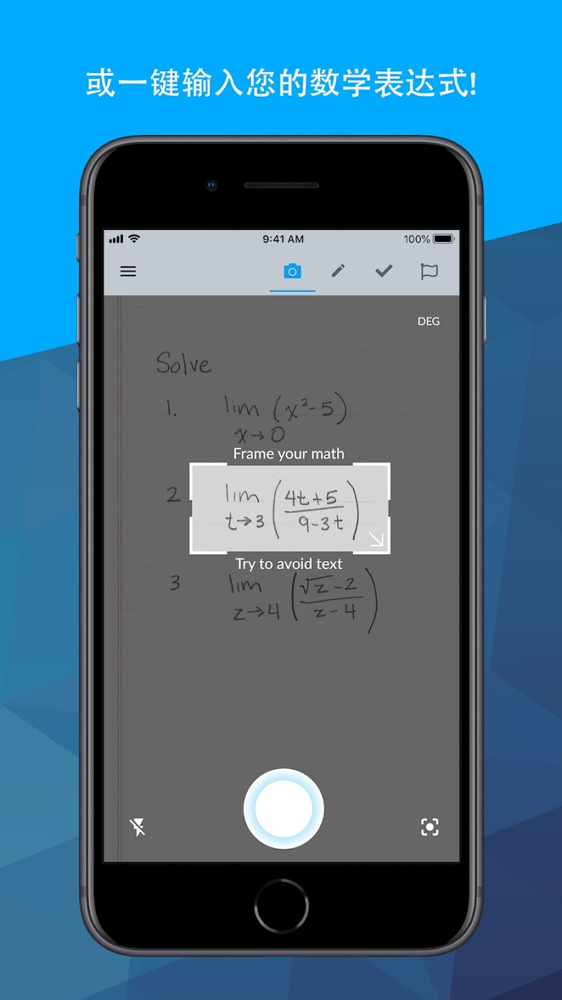
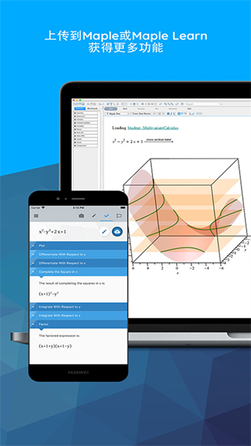

从纸面到Maple桌面，我把计算器App嵌进了每周作业的完整链路
每周做微积分和线代作业要敲长表达式、找同类题练、核图形——原来要跳四五次工具，现在一台手机串起纸面拍照到桌面端计算的闭环。
以前每周都在重复一件蠢事
我是工科大三，每周固定要做三门课的作业：高等微积分、线性代数、还有一门工程数学。以前的流程说出来你可能有共鸣——先把老师发的作业纸摊在桌上，然后打开桌面版 Maple，照着纸敲表达式。
这里是整条链路上最容易断的环节：长分式、矩阵、带上下标的微分方程，敲一遍要五分钟，敲错了静默几分钟。根号里套分式、分式里再套积分号，眼睛盯两行纸又盯两行屏幕，上标 x² 和上标 x^2 看起来只差一个符号，程序里就是两回事。我有过两次整周末调一个方程组，最后发现是矩阵里敲错了一个负号。
做完一道题想找几道同类的练手，要么翻教材找同章节的习题，要么在网上搜题型，翻来翻去又耗十分钟。算完结果也不踏实，得自己在草稿纸上画个大致曲线，跟程序算的对一对——"过零点对不对？趋势对不对？"，纸面画图精度有限，有时自己画出来和算出来差远了，不知道是算错了还是画错了。
一个周末，我偶然发现它的Maple官网上有个手机计算器App，并且可以把拍照识别的结果直接上传到桌面端。抱着试一下的心态从下载拿了安装包装了，然后整条流程被我重排了一遍。
现在的流程：四个环节串成一条线
说下我现在是怎么做的——从拿到作业纸到提交作业，全程就五个步骤，中间不需要在电脑和教材之间反复切换：
第一步：拍照输入。拿到作业纸，打开手机 App，直接拍题。拍照不是对准整张卷子瞎拍，有个小技巧是框选手写题，把无关的草稿纸和边框排除掉，识别率会好很多。App 的 AI 把手写或印刷的式子转成规范数学表达式——是结构化的，不是线性文本。
第二步：手机端先验一遍。我先在 App 里跑一遍求解，不只是看答案对不对，主要看结果页自动生成的 2D 图。输入表达式的同时图形就跟着出来——三角函数波形、抛物线的过零点、方程组的交点位置，肉眼一扫就知道趋势有没有跑歪。这步省了我以前自己在草稿纸上画图的时间。
第三步：上传桌面端深算。确认识别没问题后，点上传按钮，结构化表达式直接进桌面版 Maple。这里是整个链路的衔接点——我不用在电脑上再敲一遍，直接在桌面端展开分步解题、做变量替换、或者把单个变量改成双变量跑 3D 可视化。上传过去的是排版完整的表达式，不是一串代码文本，在桌面端的编辑器里看到的和我纸上写的排版几乎一致，肉眼核对一遍排版结构就能确认识别没出错。
第四步：Try Another 循环练习。在 App 的结果页找到 Try Another 按钮——4.3 版上线的功能，意思是"换一道同类型的题再练"。我现在做一道微积分题的节奏是：先自己纸笔算一遍，然后手机拍进去对答案，找到断点后立刻点 Try Another 来一道。错题刚暴露完、记忆最深的时候重练同类，比隔一天再翻书找题效果好太多。微分和积分题型现在也支持了，对我这种考前抱佛脚的人来说特别实用。
第五步：桌面端整理输出。所有题都在桌面端跑完后，直接复制结果和图形进 Word 整理成作业。图形在桌面端可以导出高清格式，比手机截图清楚得多，老师改作业时也看得仔细。
最容易断的两个环节怎么处理
整条流程有两个容易出问题的地方，我试了两三套方案才把它们焊死。
第一个断点是拍照识别率。手写题比印刷题难识别，尤其是潦草的板书或者我自己写得连自己都认不出的时候。我的做法是框选——把取景框尽量只框住要输入的那一行式子，排除周围的草稿、注释、其他题的选项。这样做之后识别率基本稳定在九成以上，偶尔有识别错的地方（比如 2 被认成 Z），在 App 的数学键盘里改一下就好，比重拍省事。这个框选技巧也是后来去Maple文档翻了一下才掌握的。

第二个断点是上传到桌面端的账号同步。App 和桌面端必须用同一个账号登录，否则上传按钮会灰掉。我之前换了个手机号注册的账号在手机上登，电脑上用的是邮箱账号，怎么传都传不上去。统一账号之后，上传功能是即时可用的——点一下按钮，切到电脑上，表达式已经在编辑器里了，整个过程不到两秒。
效果与边界：哪些情况这套流程不划算
说实话，不是所有场景都值得走这条链。我整理了自己用下来的适用和不适用：
划算的场景：纸质作业多、表达式复杂（矩阵、长分式、微分方程）、需要画图核对、或者要反复试同一类题型。以前敲进去一个长矩阵要五分钟，现在拍一下两秒钟，省掉的不只是时间，是转录错误那种肉眼看不见的坑。
不划算的场景：纯数字的算术题、非常短的简单表达式（直接在桌面端敲更快）、或者手机没网的时候（拍照识别需要联网）。另外 Try Another 展开完整分步过程有免费版次数限制，但单纯换题本身不收费。
还有一个前提：桌面版 Maple 是付费软件，官方有 15 天的试用，但长期使用需要购买。如果你不需要桌面端深算、只在手机上做练习，那在线白板 Maple Learn 是零安装的替代，探索类需求基本够用。

总结下来的一句话
这条流程本质上是把手机 App 当成了纸面和桌面端之间的"结构化桥梁"——纸面拍照进来是图像，App 转成规范表达式，桌面端接过去直接深算。以前纸面 → 眼睛 → 手指敲 → 屏幕 → 手动画图 → 网上搜同类题，现在变成纸面 → 手机拍照 → 手机先验 → 上传桌面 → Try Another 循环。中间少了两次手动复制（手敲表达式、手动画图找同类题），转录错误率也基本清零。
我自己每周三门作业能省出大概两小时，这笔时间拿去多刷一套真题香得很。
这套资料在三个地方都能拿到——GitHub 是主仓库，国内访问慢的用 Gitee，GitCode 也做了备份，内容是一致的。